Changes in PRIMAP-hist v2.5.1_final compared to v2.5_final for Fiji
2024-02-29
Johannes Gütschow
Change analysis for Fiji for PRIMAP-hist v2.5.1_final compared to v2.5_final
Overview over emissions by sector and gas
The following figures show the aggregate national total emissions excluding LULUCF AR6GWP100 for the country reported priority scenario. The dotted linesshow the v2.5_final data.
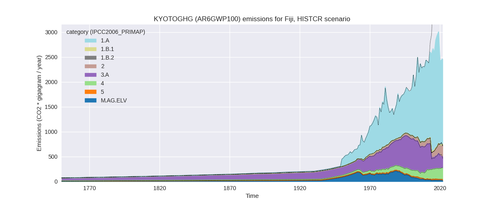
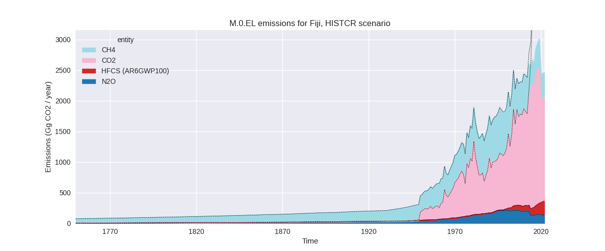
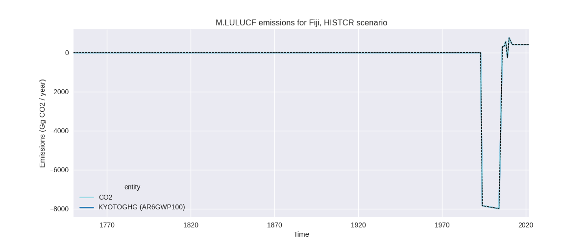
The following figures show the aggregate national total emissions excluding LULUCF AR6GWP100 for the third party priority scenario. The dotted linesshow the v2.5_final data.
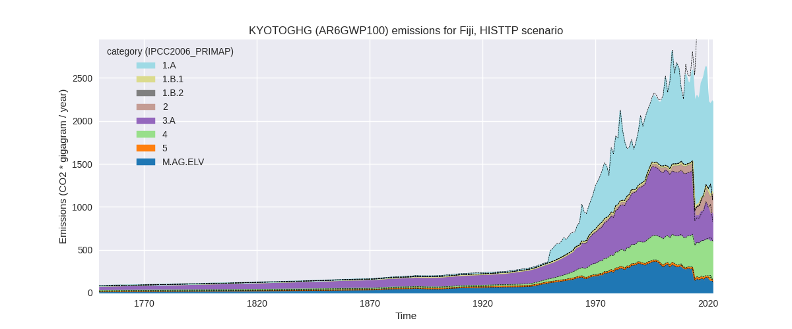
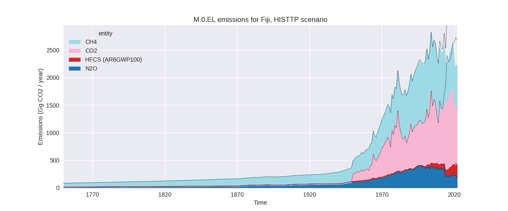
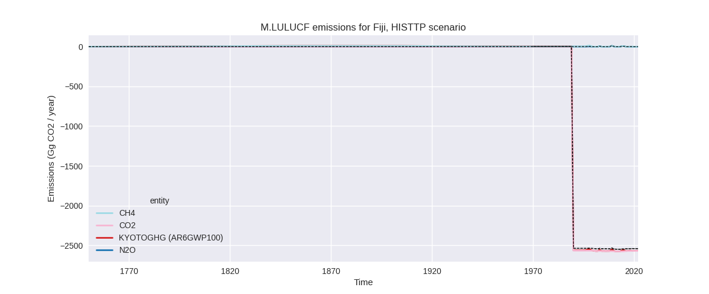
Overview over changes
In the country reported priority scenario we have the following changes for aggregate Kyoto GHG and national total emissions excluding LULUCF (M.0.EL):
- Emissions in 2022 have changed by -40.8%% (-1699.38 Gg CO2 / year)
- Emissions in 1990-2022 have changed by -12.8%% (-326.49 Gg CO2 / year)
In the third party priority scenario we have the following changes for aggregate Kyoto GHG and national total emissions excluding LULUCF (M.0.EL):
- Emissions in 2022 have changed by -33.6%% (-1129.52 Gg CO2 / year)
- Emissions in 1990-2022 have changed by -10.2%% (-265.97 Gg CO2 / year)
Most important changes per scenario and time frame
In the country reported priority scenario the following sector-gas combinations have the highest absolute impact on national total KyotoGHG (AR6GWP100) emissions in 2022 (top 5):
- 1: 1.A, CO2 with -1741.48 Gg CO2 / year (-50.8%)
- 2: 3.A, CH4 with 49.83 Gg CO2 / year (41.0%)
- 3: 4, CH4 with -18.31 Gg CO2 / year (-7.8%)
- 4: 3.A, N2O with 11.13 Gg CO2 / year (21.7%)
- 5: M.AG.ELV, CH4 with 3.32 Gg CO2 / year (59.8%)
In the country reported priority scenario the following sector-gas combinations have the highest absolute impact on national total KyotoGHG (AR6GWP100) emissions in 1990-2022 (top 5):
- 1: 1.A, CO2 with -325.55 Gg CO2 / year (-19.2%)
- 2: 2, CO2 with -2.76 Gg CO2 / year (-13.0%)
- 3: 3.A, CH4 with 2.74 Gg CO2 / year (0.7%)
- 4: 4, CH4 with -0.55 Gg CO2 / year (-0.4%)
- 5: 3.A, N2O with -0.40 Gg CO2 / year (-0.4%)
In the third party priority scenario the following sector-gas combinations have the highest absolute impact on national total KyotoGHG (AR6GWP100) emissions in 2022 (top 5):
- 1: 1.A, CO2 with -1223.49 Gg CO2 / year (-54.2%)
- 2: 3.A, CH4 with 93.45 Gg CO2 / year (43.3%)
- 3: M.AG.ELV, N2O with 9.54 Gg CO2 / year (8.7%)
- 4: M.AG.ELV, CO2 with -8.84 Gg CO2 / year (-97.6%)
- 5: M.AG.ELV, CH4 with 4.25 Gg CO2 / year (54.7%)
In the third party priority scenario the following sector-gas combinations have the highest absolute impact on national total KyotoGHG (AR6GWP100) emissions in 1990-2022 (top 5):
- 1: 1.A, CO2 with -255.30 Gg CO2 / year (-21.2%)
- 2: M.AG.ELV, N2O with -8.12 Gg CO2 / year (-3.3%)
- 3: 3.A, CH4 with 5.05 Gg CO2 / year (0.8%)
- 4: M.AG.ELV, CO2 with -4.92 Gg CO2 / year (-98.5%)
- 5: 2, CO2 with -2.76 Gg CO2 / year (-13.0%)
Notes on data changes
Here we list notes explaining important emissions changes for the country. ’' means that the following text only applies to the TP time series, while means that it only applies to the CR scenario. Otherwise the note applies to both scenarios.
General note: the main reason for changes in emissions both for the CR and TP scenario and 2022 and cumulative emissions are lower energy CO2 emissions. Other sectors only contribute little to the changes.
- 1.A, KYOTOGHG (AR6GWP100): CDIAC 2023 data are much lower (from 2010 onwards) than CDIAC 2020 data used in PRIMAP-hist 2.5.
- 3.A, KYOTOGHG (AR6GWP100): The additional year has changed the extrapolation intervals and die to the high fluctuations in FAO data this highly impacts the recent trend.
Changes by sector and gas
For each scenario and time frame the changes are displayed for all individual sectors and all individual gases. In the sector plot we use aggregate Kyoto GHGs in AR6GWP100. In the gas plot we usenational total emissions without LULUCF. ## country reported scenario
2022
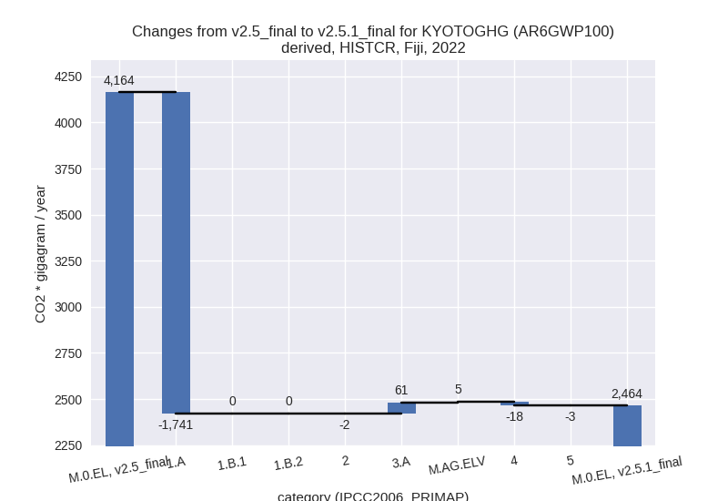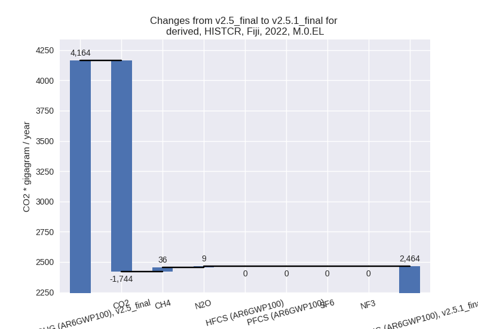
1990-2022
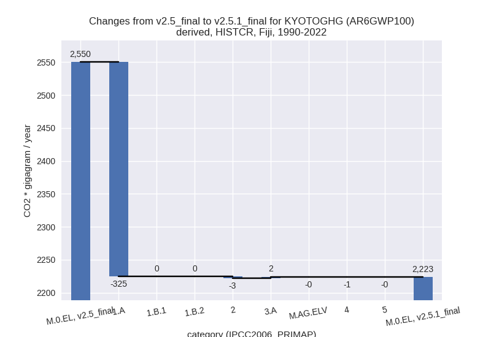
third party scenario
2022
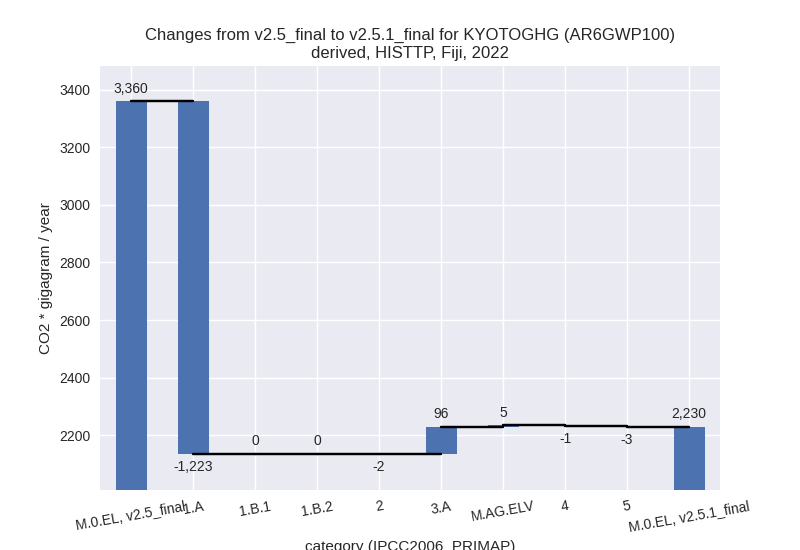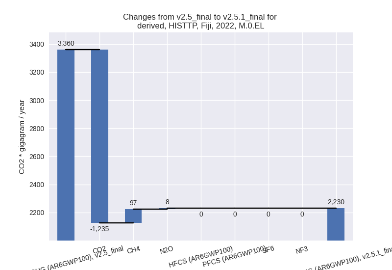
1990-2022
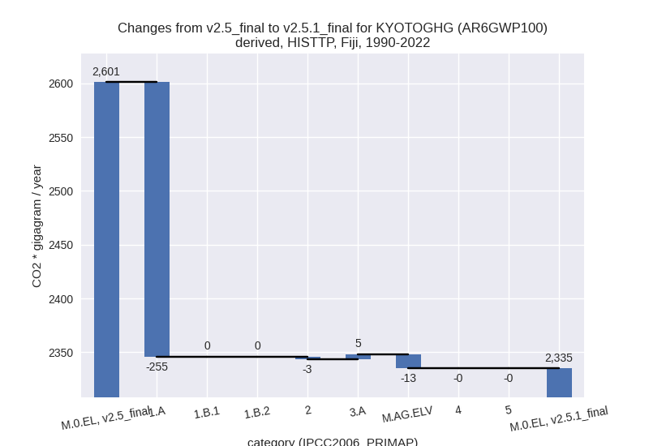
Detailed changes for the scenarios:
country reported scenario (HISTCR):
Most important changes per time frame
For 2022 the following sector-gas combinations have the highest absolute impact on national total KyotoGHG (AR6GWP100) emissions in 2022 (top 5):
- 1: 1.A, CO2 with -1741.48 Gg CO2 / year (-50.8%)
- 2: 3.A, CH4 with 49.83 Gg CO2 / year (41.0%)
- 3: 4, CH4 with -18.31 Gg CO2 / year (-7.8%)
- 4: 3.A, N2O with 11.13 Gg CO2 / year (21.7%)
- 5: M.AG.ELV, CH4 with 3.32 Gg CO2 / year (59.8%)
For 1990-2022 the following sector-gas combinations have the highest absolute impact on national total KyotoGHG (AR6GWP100) emissions in 1990-2022 (top 5):
- 1: 1.A, CO2 with -325.55 Gg CO2 / year (-19.2%)
- 2: 2, CO2 with -2.76 Gg CO2 / year (-13.0%)
- 3: 3.A, CH4 with 2.74 Gg CO2 / year (0.7%)
- 4: 4, CH4 with -0.55 Gg CO2 / year (-0.4%)
- 5: 3.A, N2O with -0.40 Gg CO2 / year (-0.4%)
Changes in the main sectors for aggregate KyotoGHG (AR6GWP100) are
- 1: Total sectoral emissions in 2022 are 1712.72 Gg
CO2 / year which is 69.5% of M.0.EL emissions. 2022 Emissions have
changed by -50.4% (-1741.08 Gg CO2 /
year). 1990-2022 Emissions have changed by -18.9% (-325.38 Gg CO2 / year). For 2022
the changes per gas
are:
For 1990-2022 the changes per gas are:
The changes come from the following subsectors:- 1.A: Total sectoral emissions in 2022 are 1707.81
Gg CO2 / year which is 99.7% of category 1 emissions. 2022 Emissions
have changed by -50.5% (-1741.27 Gg
CO2 / year). 1990-2022 Emissions have changed by -19.0% (-325.43 Gg CO2 / year). For 2022
the changes per gas
are:
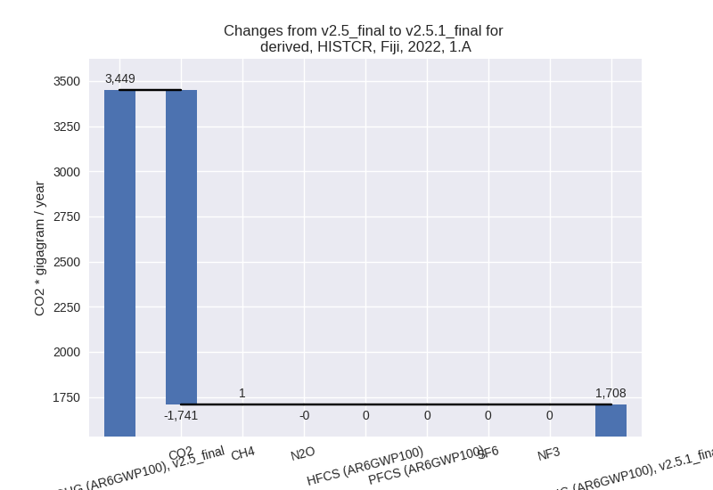
For 1990-2022 the changes per gas are:
There is no subsector information available in PRIMAP-hist. - 1.B.1: Total sectoral emissions in 2022 are 4.89 Gg
CO2 / year which is 0.3% of category 1 emissions. 2022 Emissions have
changed by 3.9% (0.18 Gg CO2 /
year). 1990-2022 Emissions have changed by 1.2% (0.05 Gg CO2 / year). For 2022 the
changes per gas
are:
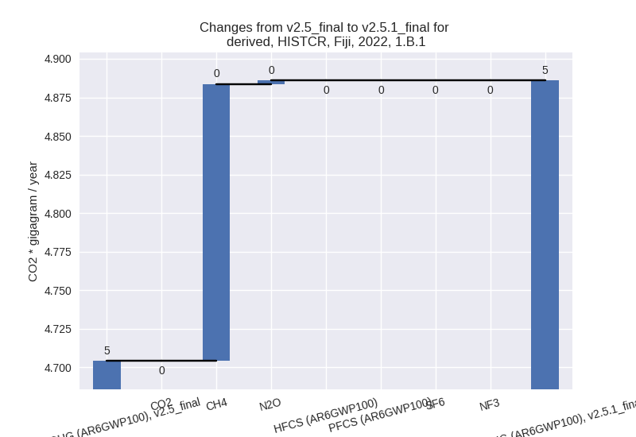
There is no subsector information available in PRIMAP-hist. - 1.B.2: Total sectoral emissions in 2022 are 0.03 Gg
CO2 / year which is 0.0% of category 1 emissions. 2022 Emissions have
changed by 35.7% (0.01 Gg CO2 /
year). 1990-2022 Emissions have changed by 7.3% (0.00 Gg CO2 / year). For 2022 the
changes per gas
are:
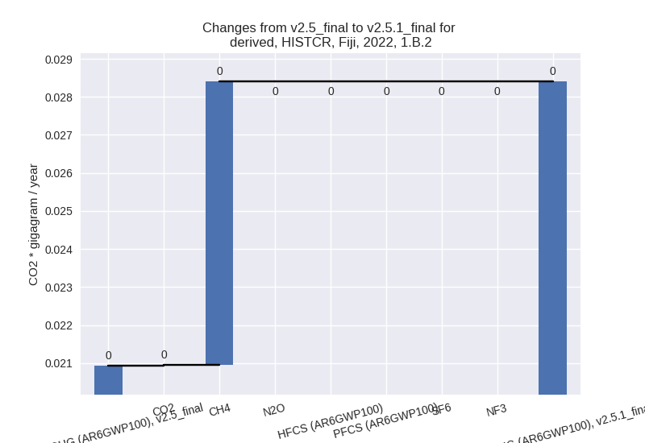
For 1990-2022 the changes per gas are:
There is no subsector information available in PRIMAP-hist.
- 1.A: Total sectoral emissions in 2022 are 1707.81
Gg CO2 / year which is 99.7% of category 1 emissions. 2022 Emissions
have changed by -50.5% (-1741.27 Gg
CO2 / year). 1990-2022 Emissions have changed by -19.0% (-325.43 Gg CO2 / year). For 2022
the changes per gas
are:
- 2: Total sectoral emissions in 2022 are 246.24 Gg
CO2 / year which is 10.0% of M.0.EL emissions. 2022 Emissions have
changed by -1.0% (-2.44 Gg CO2 /
year). 1990-2022 Emissions have changed by -2.7% (-2.76 Gg CO2 / year). For 1990-2022
the changes per gas
are:
- M.AG: Total sectoral emissions in 2022 are 254.52
Gg CO2 / year which is 10.3% of M.0.EL emissions. 2022 Emissions have
changed by 34.7% (65.62 Gg CO2 /
year). 1990-2022 Emissions have changed by 0.4% (2.31 Gg CO2 / year). For 2022 the
changes per gas
are:
The changes come from the following subsectors:- 3.A: Total sectoral emissions in 2022 are 233.80 Gg
CO2 / year which is 91.9% of category M.AG emissions. 2022 Emissions
have changed by 35.3% (60.96 Gg CO2
/ year). 1990-2022 Emissions have changed by 0.5% (2.34 Gg CO2 / year). For 2022 the
changes per gas
are:
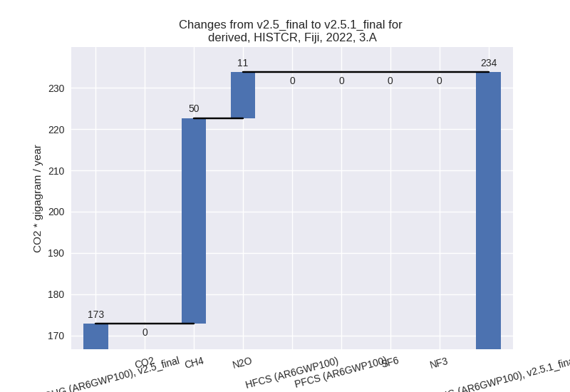
There is no subsector information available in PRIMAP-hist. - M.AG.ELV: Total sectoral emissions in 2022 are
20.72 Gg CO2 / year which is 8.1% of category M.AG emissions. 2022
Emissions have changed by 29.0%
(4.66 Gg CO2 / year). 1990-2022 Emissions have changed by -0.0% (-0.03 Gg CO2 / year). For 2022 the
changes per gas
are:
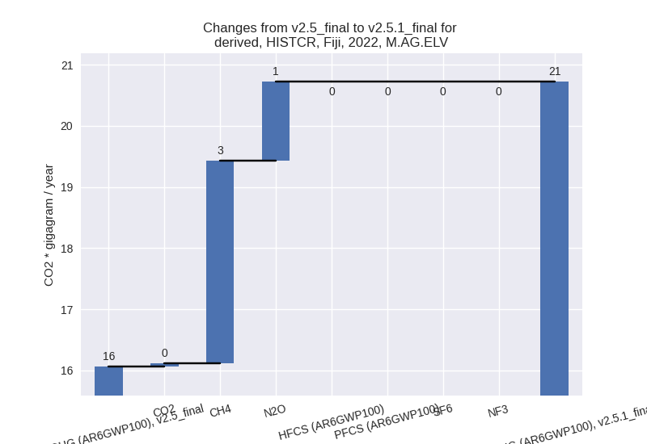
There is no subsector information available in PRIMAP-hist.
- 3.A: Total sectoral emissions in 2022 are 233.80 Gg
CO2 / year which is 91.9% of category M.AG emissions. 2022 Emissions
have changed by 35.3% (60.96 Gg CO2
/ year). 1990-2022 Emissions have changed by 0.5% (2.34 Gg CO2 / year). For 2022 the
changes per gas
are:
- 4: Total sectoral emissions in 2022 are 229.13 Gg
CO2 / year which is 9.3% of M.0.EL emissions. 2022 Emissions have
changed by -7.4% (-18.20 Gg CO2 /
year). 1990-2022 Emissions have changed by -0.4% (-0.55 Gg CO2 / year). For 2022 the
changes per gas
are:
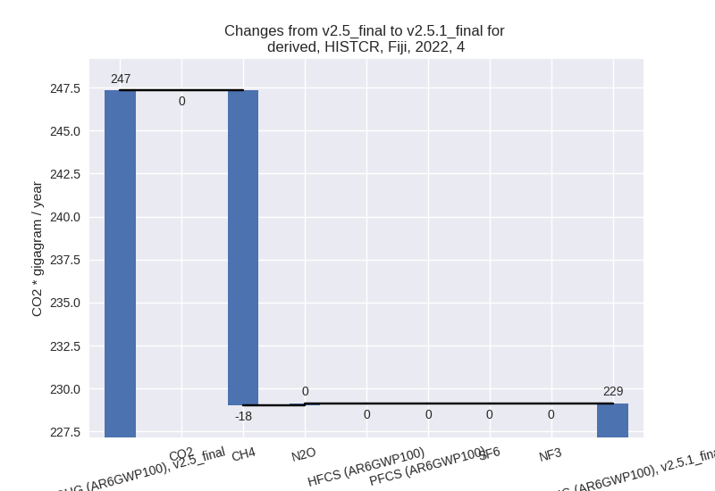 - 5: Total sectoral emissions in 2022 are 21.57 Gg
CO2 / year which is 0.9% of M.0.EL emissions. 2022 Emissions have
changed by -13.2% (-3.29 Gg CO2 /
year). 1990-2022 Emissions have changed by -0.5% (-0.10 Gg CO2 / year). For 2022 the
changes per gas
are:
third party scenario (HISTTP):
Most important changes per time frame
For 2022 the following sector-gas combinations have the highest absolute impact on national total KyotoGHG (AR6GWP100) emissions in 2022 (top 5):
- 1: 1.A, CO2 with -1223.49 Gg CO2 / year (-54.2%)
- 2: 3.A, CH4 with 93.45 Gg CO2 / year (43.3%)
- 3: M.AG.ELV, N2O with 9.54 Gg CO2 / year (8.7%)
- 4: M.AG.ELV, CO2 with -8.84 Gg CO2 / year (-97.6%)
- 5: M.AG.ELV, CH4 with 4.25 Gg CO2 / year (54.7%)
For 1990-2022 the following sector-gas combinations have the highest absolute impact on national total KyotoGHG (AR6GWP100) emissions in 1990-2022 (top 5):
- 1: 1.A, CO2 with -255.30 Gg CO2 / year (-21.2%)
- 2: M.AG.ELV, N2O with -8.12 Gg CO2 / year (-3.3%)
- 3: 3.A, CH4 with 5.05 Gg CO2 / year (0.8%)
- 4: M.AG.ELV, CO2 with -4.92 Gg CO2 / year (-98.5%)
- 5: 2, CO2 with -2.76 Gg CO2 / year (-13.0%)
Changes in the main sectors for aggregate KyotoGHG (AR6GWP100) are
- 1: Total sectoral emissions in 2022 are 1059.98 Gg
CO2 / year which is 47.5% of M.0.EL emissions. 2022 Emissions have
changed by -53.6% (-1223.09 Gg CO2 /
year). 1990-2022 Emissions have changed by -20.7% (-255.13 Gg CO2 / year). For 2022
the changes per gas
are:
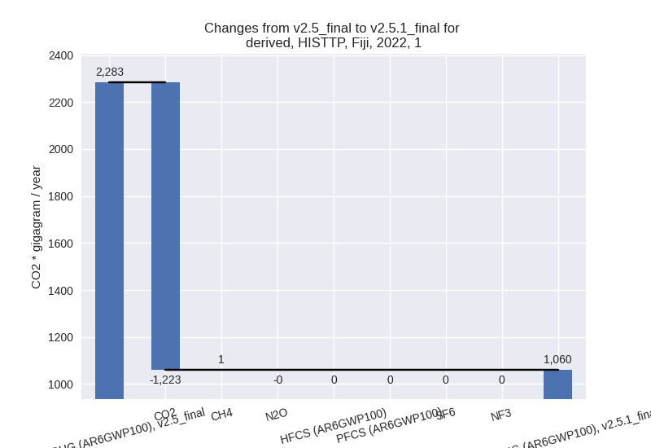
For 1990-2022 the changes per gas are:
The changes come from the following subsectors:- 1.A: Total sectoral emissions in 2022 are 1055.06
Gg CO2 / year which is 99.5% of category 1 emissions. 2022 Emissions
have changed by -53.7% (-1223.28 Gg
CO2 / year). 1990-2022 Emissions have changed by -20.8% (-255.18 Gg CO2 / year). For 2022
the changes per gas
are:
For 1990-2022 the changes per gas are:
There is no subsector information available in PRIMAP-hist. - 1.B.1: Total sectoral emissions in 2022 are 4.89 Gg
CO2 / year which is 0.5% of category 1 emissions. 2022 Emissions have
changed by 3.9% (0.18 Gg CO2 /
year). 1990-2022 Emissions have changed by 1.2% (0.05 Gg CO2 / year). For 2022 the
changes per gas
are:
There is no subsector information available in PRIMAP-hist. - 1.B.2: Total sectoral emissions in 2022 are 0.03 Gg
CO2 / year which is 0.0% of category 1 emissions. 2022 Emissions have
changed by 35.7% (0.01 Gg CO2 /
year). 1990-2022 Emissions have changed by 7.3% (0.00 Gg CO2 / year). For 2022 the
changes per gas
are:
For 1990-2022 the changes per gas are:
There is no subsector information available in PRIMAP-hist.
- 1.A: Total sectoral emissions in 2022 are 1055.06
Gg CO2 / year which is 99.5% of category 1 emissions. 2022 Emissions
have changed by -53.7% (-1223.28 Gg
CO2 / year). 1990-2022 Emissions have changed by -20.8% (-255.18 Gg CO2 / year). For 2022
the changes per gas
are:
- 2: Total sectoral emissions in 2022 are 246.24 Gg
CO2 / year which is 11.0% of M.0.EL emissions. 2022 Emissions have
changed by -1.0% (-2.44 Gg CO2 /
year). 1990-2022 Emissions have changed by -2.7% (-2.76 Gg CO2 / year). For 1990-2022
the changes per gas
are:
- M.AG: Total sectoral emissions in 2022 are 452.73
Gg CO2 / year which is 20.3% of M.0.EL emissions. 2022 Emissions have
changed by 28.5% (100.46 Gg CO2 /
year). 1990-2022 Emissions have changed by -0.9% (-7.94 Gg CO2 / year). For 2022 the
changes per gas
are:
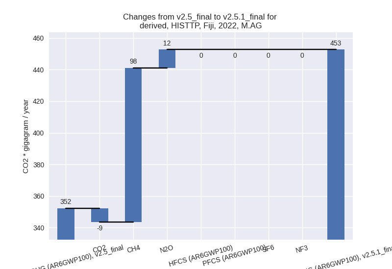
The changes come from the following subsectors:- 3.A: Total sectoral emissions in 2022 are 321.32 Gg
CO2 / year which is 71.0% of category M.AG emissions. 2022 Emissions
have changed by 42.3% (95.51 Gg CO2
/ year). 1990-2022 Emissions have changed by 0.8% (4.97 Gg CO2 / year). For 2022 the
changes per gas
are:
There is no subsector information available in PRIMAP-hist. - M.AG.ELV: Total sectoral emissions in 2022 are
131.40 Gg CO2 / year which is 29.0% of category M.AG emissions. 2022
Emissions have changed by 3.9% (4.95
Gg CO2 / year). 1990-2022 Emissions have changed by -4.7% (-12.91 Gg CO2 / year). For 2022 the
changes per gas
are:
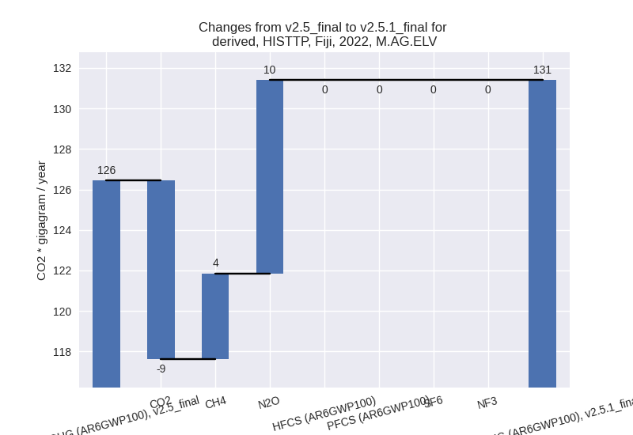
For 1990-2022 the changes per gas are:
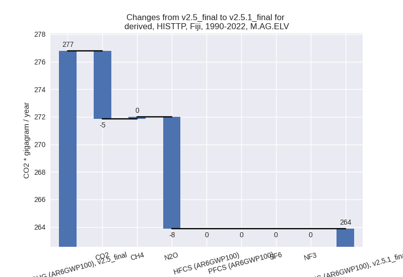
There is no subsector information available in PRIMAP-hist.
- 3.A: Total sectoral emissions in 2022 are 321.32 Gg
CO2 / year which is 71.0% of category M.AG emissions. 2022 Emissions
have changed by 42.3% (95.51 Gg CO2
/ year). 1990-2022 Emissions have changed by 0.8% (4.97 Gg CO2 / year). For 2022 the
changes per gas
are:
- 4: Total sectoral emissions in 2022 are 449.74 Gg CO2 / year which is 20.2% of M.0.EL emissions. 2022 Emissions have changed by -0.3% (-1.16 Gg CO2 / year). 1990-2022 Emissions have changed by -0.0% (-0.03 Gg CO2 / year).
- 5: Total sectoral emissions in 2022 are 21.57 Gg
CO2 / year which is 1.0% of M.0.EL emissions. 2022 Emissions have
changed by -13.2% (-3.29 Gg CO2 /
year). 1990-2022 Emissions have changed by -0.5% (-0.10 Gg CO2 / year). For 2022 the
changes per gas
are:
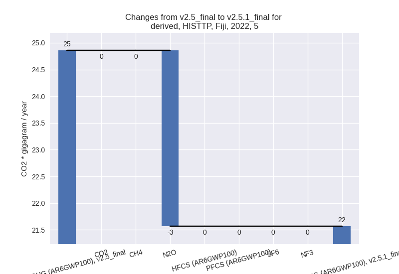